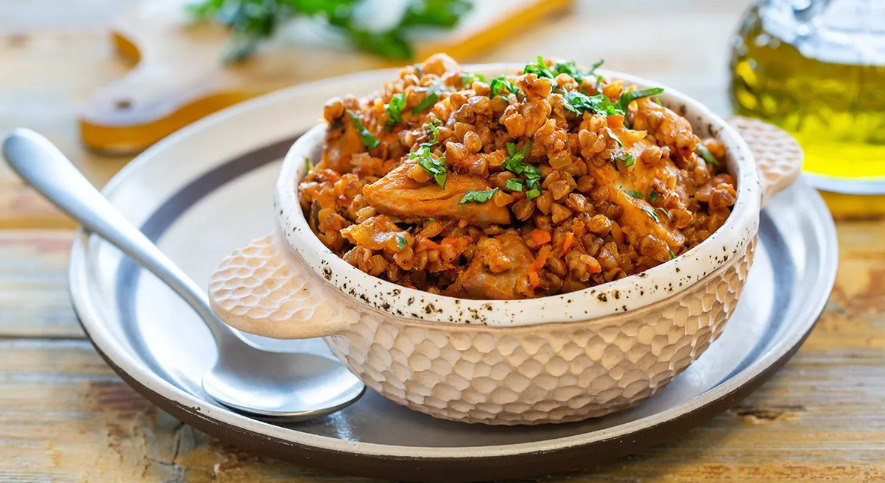

Гречка по купечески

Описание:
Что приготовить из гречки на ужин? Вкуснее всего — гречка по-купечески с курицей. Это полезное блюдо известно с незапамятных времен, ведь гречневая крупа появилась у нас очень давно.
Сначала из нее просто варили кашу, а потом стали экспериментировать с добавками, то с грибами жареными перемешают, то с луком, то с мясом разным — свининой, говядиной,
И этот вариант по легенде очень понравился купцам, которые крупой торговали. С тех пор рецепт пошел в народ. А поскольку птица всегда была дешевле мяса, то гречка с курицей стала более популярна.
И сегодня диетологи отдают предпочтение этому сочетанию, особенно с куриной грудкой, в нем — идеальные пропорции белков, жиров и углеводов. Калорийность блюда каждый может регулировать на свой вкус.
Ингредиенты на 4 порции:
- Гречневая крупа (ядрица) 1 стакан
- Бедро куриное без кожи (филе) 450 г
- Лук репчатый 1 шт.
- Морковь 1 шт.
- Томатная паста 2 ст.л.
- Чеснок 1 зубчик(а)
- Лавровый лист 1 шт.
- Перец чёрный горошек 5 шт.
- Тимьян сушеный по вкусу
- Петрушка сушеная по вкусу
- Паприка сладкая молотая по вкусу
- Масло растительное рафинированное по вкусу
- Соль по вкусу
- Зелень по вкусу
Пошаговый рецепт приготовления:
- Возьмите большую сковороду с антипригарным покрытием, разогрейте в ней 1 ст. л. растительного масла.
Филе куриного бедра нарежьте небольшими кусочками и жарьте на сильном огне в разогретом масле. Филе даст сок, дайте ему выпариться и готовьте до появления румяной корочки. Переложите филе на тарелку.
- Лук мелко нарежьте, морковь нарежьте соломкой. Чеснок порубите. В ту же сковороду налейте еще растительного масла и обжарьте нарезанный лук до прозрачного цвета, не забывайте постоянно помешивать.
- Добавьте к луку морковь, чеснок и готовьте еще 4 минуты. Верните на сковороду обжаренное филе куриного бедра, перемешайте с овощами, посолите, посыпьте приправами.
- Томатную пасту разведите в 1 стакане горячей воды, вылейте на сковороду к курице. Добавьте перец горошком и лавровый лист. Тушите на слабом огне 10 минут.
- Гречневую крупу промойте, откиньте на сито, чтобы стекла вода.
Переложите гречку на сковороду с курицей и овощами, перемешайте. Влейте еще 2 стакана горячей воды и дайте закипеть. Потом уменьшите огонь, накройте крышкой и томите еще 20 минут.
- Выключите огонь, дайте блюду настояться 10 минут. Готовую гречку по- купечески с курицей перемешайте, разложите по тарелкам, посыпьте рубленой свежей зеленью и подавайте на стол.
Примечание:гречка по-купечески с курицей получится более пышной и рассыпчатой, если на последнем этапе сложить все обжаренные ингредиенты и
сырую гречку в керамическую посуду, влить воду, положить сверху кусочек сливочного масла и запекать в духовке около 30 минут при 200 °С.